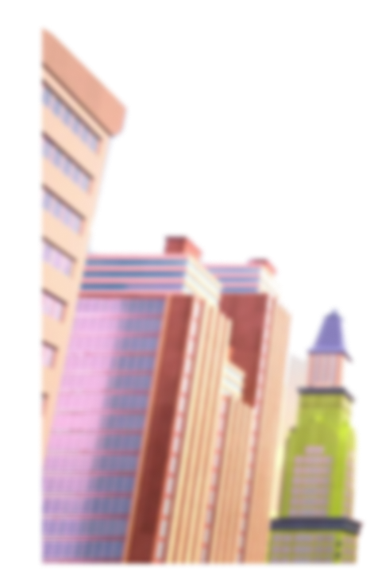
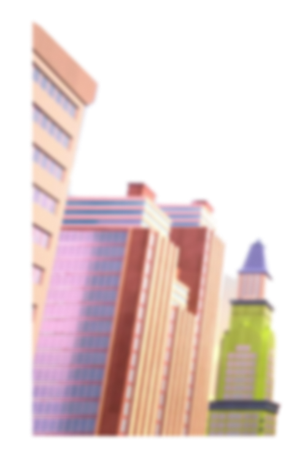
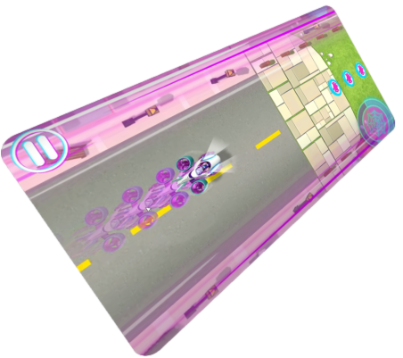
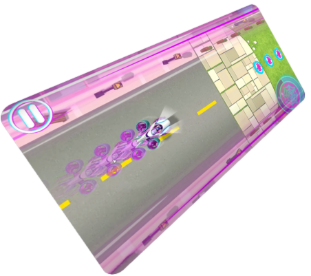

Spidey, nuestro lanzador de telarañas favorito se une a Ghost-Spider (Gwen Stacey) y Miles Morales para formar el equipo de Spidey, con la ayuda del cómico pero leal robot de Spidey, TRACE-E. Si Spidey se encuentra en una situación difícil donde necesita aún más poder de superhéroe, tengan la seguridad de que un amigo de los Vengadores correrá para ayudar.


Peter Parker, un joven huérfano neoyorquino que adquiere superpoderes después de ser mordido por una araña radiactiva, y cuya ideología como héroe se ve reflejada primordialmente en la expresión ”un gran poder conlleva una gran responsabilidad”.

Tras la muerte de Peter Parker, es quien toma la identidad de Spider-Man. La elección del presidente Barack Obama en enero de 2009, fue una fuente de inspiración para el cambio de etnicidad de Spider-Man.

El personaje es una variante de El Hombre Araña, una versión de universo alternativo de Gwen Stacy. Ella reside en la "Tierra-65", donde, en lugar de Peter Benjamin Parker, Gwen Stacy fue mordida por la Araña Radiactiva

 
